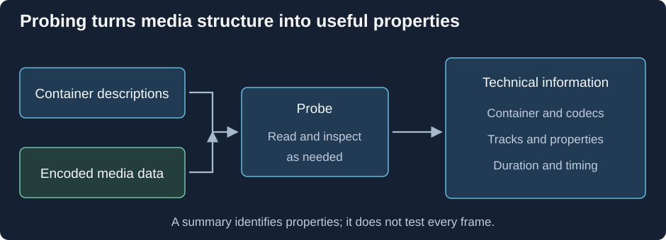

Media Probing
Media probing examines a source to identify its container, streams, and technical properties before playback.
Before a player can construct a playback path, it must discover the source's contents. Probing turns bytes and structures into a description: container, components, codec setup, timing, and useful technical properties.

Information can come from a declared field, an observation, or a calculation. These have different evidential strength.
Stored metadata, observed properties, and estimates
The reader starts by recognizing the input format from signatures and structure. It parses descriptions of tracks and codec identifiers where the container supplies them. It may then inspect encoded data, or decode a limited portion, to obtain properties that are absent from the initial descriptions.
A file-oriented container might already state its tracks in an early header. A transport stream may require observing repeated programme tables and enough packets to discover every component. An audio stream that begins after the first video packet can therefore appear only after more analysis.
| Result in a report | Possible source of the value |
|---|---|
| Track language | A container tag |
| Picture dimensions | Codec configuration or examined pictures |
| Duration | Stored timing, observed timestamps, or an estimate |
| Overall bitrate | Reported information or file size divided by duration |
A calculated bitrate is not independent confirmation of the duration used in the division. A missing field can mean that the analyzer lacked evidence to report it, rather than that the property is zero.
Why analysis limits exist
Inspecting more data takes time and input reads. FFmpeg exposes controls such as probesize for the amount of probing data and analyzeduration for stream analysis. On a continuing or unusual source, enough analysis can reveal components or configuration missed by a smaller examination. The tradeoff is startup work and latency.
More analysis is useful when discovery is incomplete. It is not a substitute for every kind of validation. A two-hour file can initialize successfully while containing a corrupt packet much later; inspecting its beginning does not exercise that packet.
This distinction matters in Emby: source probing informs technical media details and playback decisions, while library providers identify the film or episode. An accurate poster and synopsis can coexist with incomplete stream discovery.
For an unexplained report, compare MediaInfo and ffprobe on the same actual source. Keep whether a value is declared, observed, or estimated in the interpretation. If failure repeats at a known scene, examine that part and its decoding separately from the successful initialization report.
See Also
- Media Stream Inspection with MediaInfo
- Media Stream Inspection with ffprobe
- Damaged and Incomplete Media Files